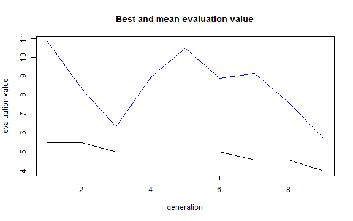

Genetic Algorithm
This example is using NetLogo Flocking model (Wilensky, 1998) to demonstrate parameter fitting with genetic algorithms.
There are many R packages for solving optimization problems (see CRAN Task View). This example uses rbga function from genalg package. See also Thiele, Kurth & Grimm (2014) chapter 2.35 Evolutionary or genetic algorithms.
Experiment definition is the same as in L-BFGS-B Optimization example:
experiment <- nl_experiment(
model_file = "models/Sample Models/Biology/Flocking.nlogo",
setup_commands = c("setup", "repeat 100 [go]"),
iterations = 5,
param_values = list(
world_size = 50,
population = 80,
vision = 6,
min_separation = seq(from = 0, to = 4, by = 0.5),
max_align_turn = seq(from = 0, to = 20, by = 2.5)
),
mapping = c(
min_separation = "minimum-separation",
max_align_turn = "max-align-turn"),
step_measures = measures(
converged = "1 -
(standard-deviation [dx] of turtles +
standard-deviation [dy] of turtles) / 2",
mean_crowding =
"mean [count flockmates + 1] of turtles"
),
eval_criteria = criteria(
c_converged = mean(step$converged),
c_mcrowding = mean(step$mean_crowding)
),
repetitions = 10, # repeat simulations 10 times
eval_aggregate_fun = mean, # aggregate over repetitions
eval_mutate = criteria( # evaluation criterium
eval_value =
sqrt((c_mcrowding - 8)^2 + 400*(c_converged - 1)^2)
)
)In this example the nl_get_eval_fun function is used to get the evaluation function used instead of evaluating with nl_run.
Note that this kind of evaluation requires started NetLogo instance. User have to take care to initialize NetLogo and load the model before optimization begins and close NetLogo when it is no longer needed (see nl_eval_init and nl_eval_close in package documentation).
library(genalg)
cl <- nl_eval_init(experiment, parallel = TRUE)
param_range <- nl_get_param_range(experiment)
set.seed(1)
eval_fun <- nl_get_eval_fun(
experiment = experiment,
param_names = names(param_range$lower),
criteria = "eval_value",
parallel = TRUE,
cluster = cl )
monitor_data <- list()
monitor <- function(obj) {
monitor_data[[obj$iter]] <<- obj
}
result <-
genalg::rbga(
stringMin = param_range$lower,
stringMax = param_range$upper,
popSize = 10,
evalFunc = eval_fun,
iters = 9,
monitorFunc = monitor
)
nl_eval_close(parallel = TRUE, cl)library(genalg)
plot(result)
plot_monitor <- function(obj) {
xlim = c(obj$stringMin[1], obj$stringMax[1]);
ylim = c(obj$stringMin[2], obj$stringMax[2]);
plot(obj$population, xlim=xlim, ylim=ylim,
main = paste("Iteration: ",obj$iter),
xlab = names(param_range$lower)[1],
ylab = names(param_range$lower)[2]);
}
op <- par(mfrow = c(3,3))
for(obj in monitor_data)
plot_monitor(obj)
par(op)